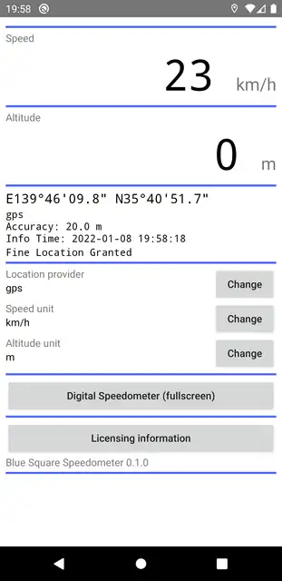
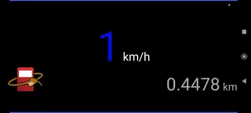

Stateful Speedometer
خرائط وسفر
Displays speed, altitude and current coordinates using device location provider. Also tracks total distance travelled and distance since last gas refill. Distance since last oil change is an upcoming change. Stateful Speedometer does not have network connection privilege, and does not have function
✓ ترخيص مفتوح (Apache-2.0) · آخر تحديث: 2025-11-01
0.2.0الإصدار
986 KBالحجم
Apache-2.0الرخصة
Open in Kanzتحميل APK (986 KB)
Download APK
SHA-256: 6af8e56bf4ef635b8aeff7bd61398ea46e1f728911a5f5c7b6344039f0ba90af


امسح الكود لفتح صفحة التطبيق
Scan to open this app page
لو كنز مش متثبت عندك: نزّل متجر كنز.
Not installed? Get the Kanz store.